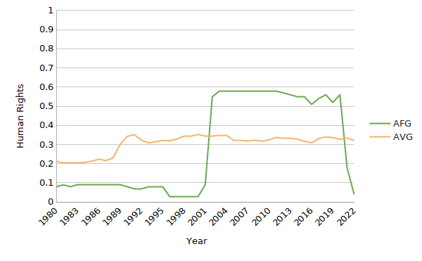
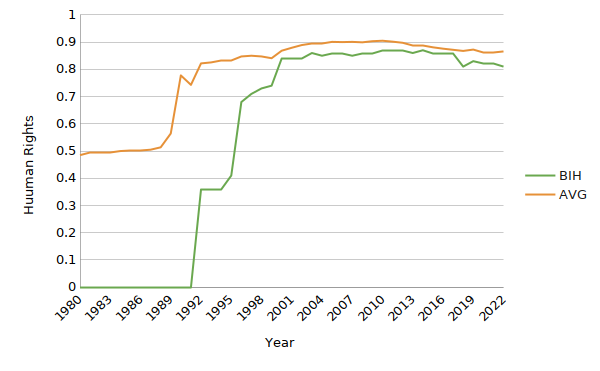
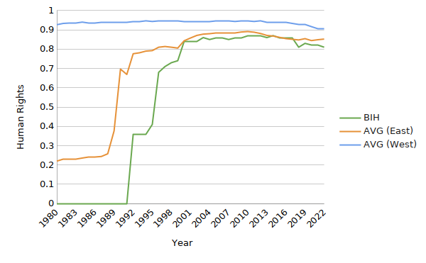
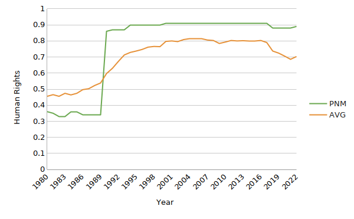
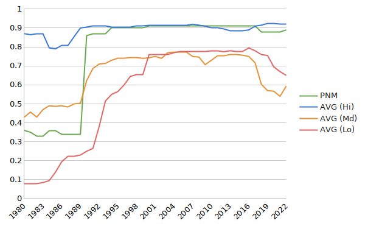

Violence and Freedoms: Three Case Studies on Interventions and Rights
BrittMouse
17 April 2023
Abstract
U.S. foreign policy has been the subject of intense criticism from the broader left-wing of American and European politics, especially in the wake of U.S. support for Ukraine in the wake of the Russian invasion in February 2022. Much of this criticism is born out of experiences in Afghanistan and Iraq and leads to worse foreign policy decisions overall, including support for autocratic states hostile to human rights and the Left’s supposed goals. This article sets out to find whether this view is accurate to recent humanitarian interventions by the U.S. by analyzing three case studies and comparing the longitudinal human rights values of the intervened and surrounding states separately. The data suggests that after these interventions, rights increased drastically in each intervened state. While these findings do not justify war crimes committed during these interventions or other U.S. military actions, they do provide insights into the history of U.S. interventions and a starting point for future research into how to conduct interventions in the future.
Introduction
Humanitarian interventions are perceived very differently depending on political bias. While the general consensus is that interventions are important and useful tools to relieve humanitarian disasters, the American and European left-wings are rather hostile towards them. For many leftists, this stems from an “America bad” epistemology influenced by domestic policy (healthcare, policing, taxes, etc.) and key foreign policy moments like the establishment of banana republics throughout Latin America, the justification of the invasion of Iraq through WMD claims, and continued support for Israel despite their actions towards the Palestinians.
Worryingly, this reasoning often leads to even worse foreign policy stances, whether that be support for Russia’s invasion of Ukraine in February 2022, denying chemical weapon attacks by the government of Bashar al-Assad in Syria, or denying that the genocide in Srebrenica, Bosnia was a genocide (despite the determinations by international legal systems). It was these stances that led the author to ask whether the U.S. was as malicious with its humanitarian interventions as it was made out to be. This article sets out to prove that humanitarian interventions have a significantly positive effect on human rights and determine why those interventions had the positive effect they had. This is done in the hope of encouraging others on the Left to properly consider foreign policy decisions by the U.S. and other states instead of starting with a belief and working backwards to justify it.
Literature Review
Intervention
A review into U.S. intervention must begin with what an intervention is. A humanitarian intervention is a set of actions taken by an actor to alleviate or end a humanitarian crisis in another state; the crisis could involve large market failures, famine, civil war, terrorism, or crimes against humanity including genocide. Humanitarian interventions take a variety of forms depending on the policy tools used by the actors. Since military force is a common form of intervention, the term “military humanitarian intervention” (MHI) will be used. Since the 1990s, the U.S. has engaged in several interventions around the world, differing in scale, method, length, success, and stated purpose. The intervention in Somalia in 1992 and 1993, called “Operation Restore Hope,” was meant to end the ongoing civil war and ease the effects of the famine of 1992, and was largely done via U.S. armed forces and U.N. peacekeepers on the ground; in contrast, the intervention in Kosovo in 1999 by NATO was an air bombing campaign meant to end the war and hold Yugoslavian and later Serbian President Milošević responsible for the ethnic cleansing of Kosovars.
The U.S. is far from the only player on the world stage that intervenes in humanitarian crises; there are a number of non-governmental organizations, intergovernmental agencies, and other states that intervene in a variety of ways and for a variety of reasons. The U.N. hosts several agencies that intervene in humanitarian crises, including U.N. peacekeepers, High Commission on Refugees (UNHCR), Office for the Coordination of Humanitarian Affairs (OCHA), and International Federation of the Red Cross and Red Crescent Societies (IFRC). NGOs include Doctors Without Borders (MSF), advocacy agencies like Amnesty International and Human Rights Watch (HRW), and financial aid organizations like Syria Relief and Development. NATO also has a history of engaging in MHI, usually at the permission of the U.N. Security Council. While this paper deals with military humanitarian intervention, the actions of other intervention and aid groups have to be taken into account.
Paradigms
Neoliberalism
Liberalism was borne out of the Enlightenment and the writings of Locke, Smith, Voltaire, and Kant; neoliberalism is a refinement of that theory informed by theorists of the past century, especially Keohane and Nye. It questions the security focus of neorealism and instead focuses on mutual benefits (absolute gains) and democratization as ways of deterring violence and addressing the anarchy of IR. It views intergovernmental and nongovernmental organizations (the U.N. and universities being an example of each) as important parts of understanding IR, along with international trade to tie states closer to each other economically and democratization to deescalate potential conflicts. This last part is essential to democratic peace theory, the theory that democracies do not go to war with each other because they have less harmful methods of engaging in conflict resolution.
Neoliberalism emphasizes the democratizing effect of free trade among states and communication between states in order to solve “prisoners’ dilemmas,'' where two parties have an incentive to cheat on each other to pursue greater relative gains while worsening absolute gains. However, international trade has not always worked to facilitate democratization and peace – Germany’s attempt to integrate Russia into the European market via the Nord Stream pipelines backfired in February 2022 with the invasion of Ukraine. There is significant overlap between neoliberalism and institutionalism as described by Keohane and Martin (1995), so this article will treat the two as the same, despite Keohane’s dislike of being considered a neoliberal.
Support for humanitarian intervention is generally split along ethical lines. Immanuel Kant, someone who believed in natural law (Holzgrefe, 2003), opposed interference in another state’s policy unilaterally, claiming that humanitarian crises “can serve as a warning, by means of the example of the great ills a people has brought upon itself through its lawlessness” (Kant, 2006, p. 70). Joseph Nye, a social contractarian (Holzgrefe, 2003), disagrees, saying “The American people clearly think that their interests include certain values and their promotion abroad—such as opposition to ethnic cleansing in the Balkans” (Nye, 1999, pp. 23-4). For those neoliberals that do support intervention, it is out of the belief that states have a duty to protect and promote the rights inherent to those living there, and that when a state acts antagonistically towards that duty, other states have a moral obligation to intervene to protect those rights (Tesón, 2003). This is reflected in the doctrine known as “responsibility to protect” (R2P).
Neorealism
As an update to the theory of realism, neorealism keeps the main assumptions of the international system, namely that states are the primary actor in IR, that the international system is anarchic, and a state seeks to maximize its own security / power and will do so above everything else. Classical realism lacks the structural system introduced by Kenneth Waltz, who believed that structures played the biggest role in determining how states pursue their security, not human nature as espoused by classical realism and informed by Machiavelli and Hobbes (Waltz, 1990). The division between security and power as the priority of a state is a debate within neorealist circles that has been ongoing for several decades. Defensive realists, those who see security as the most desirable object of the state, often look at “security dilemmas,” places where State A taking actions to enhance its own security, even ones seen as entirely defensive by State A, is seen as an offensive move by the states around it that requires starting their own defensive security initiatives. This is because states inherently do not trust each other and can only really trust themselves. Security dilemmas can end up spiraling into arms races and full conflict if not defused, so defensive realists favor a balance of power between states (Spindler, 2013). Offensive realists, those who see power as the state’s priority, favor a “great powers’ hegemon” view of IR, where powerful states exert a large amount of influence over states in their sphere of influence, including determining the foreign policy of those states. The offensive realist understands power as the most desirable object of the state, even if it makes that state less secure over time, and sees that striving for power as what perpetuates the great powers’ competition.
Neorealists disagree with liberal institutionalism’s embrace of absolute gains over relative gains and how institutions can work to facilitate cooperation by punishing cheaters, thus lessening the suspicion states have towards each other (Mearsheimer, 1994). The constant risk states put themselves in by simply existing in the international community drives their decision-making towards security, whether that is obtained by military force or cooperation, although military force is preferred as cooperation runs the risk of cheating by one or multiple parties seeking to maximize relative gains. Due to working within a great powers’ analysis, neorealists try to avoid “aggressive” acts like intervention if they are within another great power’s sphere of influence so as to not upset the balance of powers on the world stage. The focus is security, not necessarily human well-being. An example of this line of thinking is Mearsheimer’s 2015 lecture “Why Ukraine is the West’s Fault,” where he claims expanding NATO to Poland and the Baltic states forced Russia to annex Crimea.
Constructivism
Constructivism is a more recent paradigm that takes cues from sociological theory in considering the interests of actors as socially constructed instead of set in stone. The main idea of constructivism is that international relations are governed by norms which are subject to change as time moves on, reflecting both the systems of government the state uses to rule and social norms in domestic society. To some extent this is true – international relations worked differently during medieval Europe than they did during the Cold War; constructivists relate this to how the understanding of the role of government has changed and how IR actors have approached anarchy. Alexander Wendt’s 1992 article “Anarchy is What States Make of It” suggests that while anarchy exists, how states approach anarchy varies based on norms. While neorealists claim that anarchy is something to protect against via military security and neoliberals view anarchy as something that can be limited by international institutions and trade, constructivists believe that both groups are doing so in the ways they are because of how anarchy is considered.
Constructivism has a fair share of critics. Both neorealists and neoliberals believe that since constructivism is not trying to predict future IR events, that it is not worth taking seriously. There is also the truth that this paradigm is younger and significantly more complicated than neorealism and institutionalism, as a constructivist is not just taking into account states, but also ethnic diversity, government structure, public opinion, the ideas of those in charge, the role of both international institutions and NGOs and everything underneath them, and local and international cultural norms. As such, it is more suited to understanding events of the past, not predicting events of the future.
In interventions, there are two norms inherently at odds with each other – state sovereignty and human rights. Other norms play into the broader picture, including legality, legitimacy, morality, and constitutionality (Dixon, 2013). Constructionists see intervention as a decision states make based on those norms and their interactions with each other, and view the aftermath of intervention as based on whether the norms of civil liberties rub off on the government and its members.
Humanitarian Crises
A humanitarian crisis is an event or series of events that severely threatens the rights or lives of a large group of people. These are distressingly common throughout the wider world and only look to be getting worse. Currently, UNHCR lists sixteen emergencies or situations on its Emergencies page: Afghanistan, Burundi, the COVID-19 pandemic, Central African Republic, Democratic Republic of the Congo, Central American displacement, Ethiopia-Tigray, Iraq, Nigeria, the Rohingya people, Sahel, South Sudan, the Syrian Civil War and refugee crisis, the 2023 earthquakes that devastated Syria and Turkey, Ukraine, Venezuela, and the Yemeni Civil War (UNHCR, 2023). Several commonalities exist between them, including lack of access to food and water, mass internal and external displacement, and state and civil violence, whether that be terrorism like in Nigeria and Iraq, civil wars like Syria and Ethiopia-Tigray, or invasions like what Ukraine is still experiencing. These are all current crises, and as such are not wholly suited for a longitudinal study on the effects of MHI on human rights – it is simply too soon. Humanitarian crises, sadly, are not a new development.
Looking back into the 2010s, 2000s, and 1990s, there are several times the U.S. has used MHI abroad, notably in Panama in 1989-1990, Iraq and Kuwait in 1991, Somalia in 1992 and ‘93, Haiti in ‘94 and ‘95, Bosnia and Herzegovina in ‘95, Kosovo in ‘98 and ‘99, and Libya in 2011. The invasions of Afghanistan in 2001 and Iraq in 2003 are contentious as to whether they count as humanitarian intervention (Roth, 2006; Connah, 2021), but I will include both regardless. During the Cold War, humanitarian intervention was less common, but the U.S. intervened heavily in Latin American elections, usually to “contain the spread of communism” and enforce the Roosevelt Corollary to the Monroe Doctrine while supporting leaders like Pinochet in Chile1 that violated human rights regularly (Webber, 1999). These are not humanitarian interventions and as such will not be considered, but it is still helpful to know about the history of intervention by the U.S. military as that is why many are skeptical of it working or being done for humanitarian reasons.
Research Design
“Have U.S. military humanitarian interventions between 1985 and 2022 had a positive impact on human rights abroad?” The author believes they have, but different paradigms will give different reasons for the improvement. A constructivist might say “MHI has a positive effect on human rights because it allows the norms of liberal human rights to be established and perpetuated through the population,” while a neoliberal would contend “MHI has a positive effect on human rights because it leads to the establishment of domestic and international institutions that are able to protect human rights.” The neorealist would attribute it to power projection, saying “MHI has a positive effect on human rights because it is the exercise of hard power that allows these institutions and norms to perpetuate in the first place.” The author believes the constructivist is most correct in this case, as human rights can and will perpetuate themselves through norms given fertile soil.
The hypotheses are as follows:
H1 – If the U.S. decides to launch MHI, human rights will increase significantly;
H2 – If MHI happens in a region with high levels of human rights development, rights will stay high after the intervention is over;
H3 – If MHI is supported by international institutions like the U.N. Security Council (U.N.S.C.), human rights will be higher than those without int'l support;
H4 – If MHI involves the use of foot soldiers in a primary capacity, human rights will be higher than if the intervention was carried out primarily via airstrikes;
H5 – If MHI takes longer than 12 months, human rights will not increase as much as if it had taken less time.
Methods
This article will be using case studies on interventions in Afghanistan (2001-2021), Bosnia and Herzegovina (1995), and Panama (1989-1990). Information on these case studies will be gathered from peer-reviewed articles, books, and government sources. Longitudinal data on human rights in states will be pulled from the Varieties of Democracy (V-Dem) Country/Year dataset for 2023 (Coppedge et al.) and analyzed using Microsoft Excel – the specified index is v2x_civlib, which is a composite index of three other indices in the dataset (freedom from physical violence, private civil liberties, and political civil liberties)2; the researchers also include upper and lower bound coding so significant changes in civil liberties can be determined.
Human rights is synonymous with civil liberties for the purposes of this study, using the definition in the V-Dem codebook (2023) for v2x_civlib:
Civil liberty is understood as liberal freedom, where freedom is a property of individuals. Civil liberty is constituted by the absence of physical violence committed by government agents and the absence of constraints of private liberties and political liberties by the government. (p. 296)
Human rights serve as both the dependent variable for intervened states and independent variable for nearby states taken as a mean to serve as a comparison to the intervened state, since this article seeks to test regional human rights development’s impact on long-term human rights development in the intervened state. The timeframe for all the human rights data is 1985-2022, but not all that data is necessarily relevant to each MHI and may be narrowed as needed; any narrowing of the timeframe will be specifically noted. Due to the breakup of the USSR in 1990 and breakup of Yugoslavia in 1992, some states are only going to be involved in the counts after that date.
International backing is an independent variable and is measured by whether the U.N. Security Council issued at least one resolution in favor of the intervention or whether the U.N.S.C. disapproved by either failing to issue a resolution in support of, or passing a resolution in opposition to, the intervention.
Length of intervention here is referring to how long U.S. forces took to “end” the humanitarian crisis, but since that is different for each intervention, I will specify time frames for each: Afghanistan lasted from 7 October 2001 to 15 August 2021 (Operations Enduring Freedom and Freemon’s Sentinel); Bosnia and Herzegovina lasted from 30 August to 20 September 1995 (Operation Deliberate Force)3; Panama from 20 December 1989 to 30 January 1990 (Operation Just Cause). The method of intervention is split into two categories – with and without boots on the ground. In the former, the U.S. engages in a ground invasion to intervene in the state, while in the latter, intervention is carried out via airstrikes and other methods that do not involve an invasion. This does not take into account peacekeepers or peace enforcement operations on the ground like UNISOM or UNPROFOR that are not affiliated with the U.S. The length and method of intervention are also independent variables.
Analysis
Human Rights
The analysis done in Excel is rather simple: data were copied from the .csv dataset for the three separate MHIs and turned into separate charts comparing the human rights in intervened states and other states in the region – the other states in question will be listed in each exhibit. Non-intervened states had their human rights scores averaged together to get a sense of how developed human rights are in the region and to simplify the charts.
Exhibit A -- Afghanistan
Afghanistan is a state in Central Asia with a long history of resisting occupation even before the U.S. invasion in 2001. It was also one of the worst states of human rights in the world pre-2001; from 1996 to 2000, Afghanistan had a 0.03, the worst in the region. Under the Taliban’s rule, sharia law is implemented, banning women from schools and employment and mandating head-to-toe coverings in public, and imposing strict criminal penalties including amputation, floggings, and public executions (Bloch, 2021). Both the Taliban and al-Qaeda are designated as terrorist groups in 1999 by the U.N. (S/RES/1373, 2001), due to their engagement in terrorism and support of terrorist groups around the world, most notably on September 11, 2001. The U.S. invoked Art. V of the North Atlantic Treaty and U.N.S.C adopted Resolution 1368, condemning the attacks. The subsequent U.S. invasion, involving airstrikes and many troops on the ground, overthrew the Taliban in short order and began the work of building a liberal democracy over the next two decades, an effort that collapsed after the withdrawal in 2021 and subsequent Taliban conquest.
While the U.S. failed to build a lasting liberal democracy in Afghanistan, HMI substantially improved human rights in the state during its course. To compare these rights to those of the region, values from China, Iran, Kyrgyzstan, Pakistan, Tajikistan, Turkmenistan, and Uzbekistan were averaged together. The data are rather revealing – the U.S. occupation results in the best human rights record Afghanistan has seen in decades, with a high of 0.58 from 2003 to 2011, followed by a strong crash as soon as the U.S. withdraws.

At first glance, the reason for this is very simple: human rights were only proliferated through military force from the U.S., NATO, and Afghan National Security Forces (ANSF), and when that military force collapsed, so did the liberal regime. This is certainly a neorealist way of interpreting the situation, but a constructivist might see things differently, in that the norms of human rights were unable to proliferate throughout Afghanistan thoroughly due to a long history of the region being geopolitically isolated from liberal notions of human rights for centuries. A more optimistic constructivist might disagree with that assessment, and contend that human rights norms being introduced and proliferated for twenty years has given it enough time to settle in fertile soil and that there may yet be a renaissance. Neoliberalism would instead point out that institutions protecting human rights were dissolved after the Taliban took over, and that is what caused the crash. Frankly, it is just too soon to tell what the future of Afghanistan will be, and whether the Taliban are going to continue their fundamentalist policies of sharia, reform, or be overthrown by internal or external forces.
Exhibit B -- Bosnia And Herzegovina
Bosnia and Herzegovina (BiH) formed out of the Yugoslav Wars as an independent state for Bosniacs (Slavs that had converted to Islam centuries ago) that also sought to respect the rights of non-Bosniacs living in its borders. The borders of BiH also included large Serb and Croat populations, and Serbs living in BiH wanted to stay with the Federal Republic of Yugoslavia (later Serbia and Montenegro, simply Serbia). This started a war that lasted from 1992 to 1995 filled with crimes against humanity, war crimes, and ethnic cleansings committed on all sides. The worst and most numerous crimes were committed by the Bosnian Serbs, represented by Republika Srpska. The International Criminal Tribunal for the Former Yugoslavia (ICTY), part of the International Criminal Court, convicted 52 Serbs who were part of Republika Srpska in connection to various breaches of international law; most notable were the convictions of Ratko Mladic, Radovan Karadzic, and Radislav Krstic on counts of genocide for their roles in the Srebrenica genocide, where over 8000 Bosniac men and boys were executed by the Army of Republika Srpska (VRS) and many Bosniac women and girls were raped between 11 and 13 July. Srebrenica was originally a safe zone set up by the U.N. peacekeeping mission U.N. Protection Force (UNPROFOR), but the Dutch peacekeepers stationed there were unable or unwilling to stop VRS from moving in.
In response to the genocidal massacre and mass rapes, U.N.S.C. demanded that VRS withdraw from Srebrenica and another safe zone at Zepa (S/RES/1004, 1995). VRS refused to do so. After VRS shelled the Markale marketplace in Sarajevo in late August, the NATO mission enforcing a no-fly zone over the former Yugoslavia (Operation Deny Flight) became a deliberate air strike campaign against Bosnian Serb positions in an effort to end the ethnic wars and force all sides to come to the negotiating table. While there was a ground element to the operation consisting largely of artillery, and UNPROFOR was still in the country, the intervention was largely an air campaign lasting 41 days. After the Dayton Agreements brought an end to the Bosnian War, there has been a concerted effort to keep that peace through IFOR, SFOR, and national and international judicial systems.

The states used to determine the average are Albania, Austria, Bulgaria, Croatia, Greece, Hungary, Italy, Kosovo, North Macedonia, Romania, Serbia, and Slovenia, and the time frame sits from 1985 to 2005. Since BiH independence was born out of a war of separatism, human rights were low at the start, sitting at 0.36 from 1994. After MHI, human rights increased to 0.41 by the end of 1995 and 0.68 by 1996. There is another bump after the end of the Kosovo War, but human rights do not quite reach the average levels of states in the region. Still, it is clear that MHI led to a significant increase in human rights in BiH. The question then is why did these rights stay high after the intervention was over compared to Afghanistan, or more specifically, why mass ethnic conflict has not broken out in BiH since?

A neorealist would argue that BiH, Croatia, and Serbia have not gone to war again because any gains from new territory or integration of ethnic Bosniacs, Croats, or Serbs into these respective states would be significantly outweighed by the cost of doing so both in terms of materiel and international standing. Agencies like the Organization for Security and Cooperation in Europe (OSCE) and the current EU peacekeeping operation in BiH (EUFOR Althea) dissuade any state from taking publicly threatening acts against one another. The neoliberal disagrees, and sees the actions of ICTY, the International Court of Justice (ICJ), and the establishment of national judicial processes and human rights protections in BiH as pivotal in promoting long-term human rights improvement. Constructivists would disagree with both and believe that the high levels of human rights development in states west of the Iron Curtain proliferated through through former Soviet bloc states and has since taken root in the social consciousness, and that while there is still some ways to go with some post-Soviet states, it has largely been successful in these efforts.
To test the constructivist’s view, BiH’s human rights are compared with those of post-Soviet states (simplified to “East” and containing Albania, Bulgaria, Croatia, Hungary, Kosovo, North Macedonia, Romania, Serbia, and Slovenia) and states west of the Iron Curtain (“West,” Austria, Greece, and Italy). The Western states stay at or right next to 0.94 for the entire period (1985-2005) while BiH lags behind the post-Soviet states until 2000, remaining very close for the rest of the period of analysis. This suggests that rather than the threat of future military force being what promoted human rights in BiH, it was the embedding of human rights norms that facilitated the strengthening of civil liberties post-intervention.
Exhibit C -- Panama
Panama in the 1970s and 1980s was ruled by various dictators, the last being General Noriega, a CIA-funded drug trafficker and authoritarian nationalist who was the de facto leader from 1983 to 1989 (Gilboa, 1995). Noriega’s arms and drug trafficking was overlooked for years because he was an important asset for the U.S. in their fight against the Sandinistas and Colombian drug traffickers like Pablo Escobar, but after 1985 things deteriorated. A series of crises frayed relations between Washington and Noriega, as domestic actors revealed many of Noriega’s crimes and corruption and protesters demanded his resignation. In 1988, he was indicted in Florida by two federal grand juries on fifteen counts of drug trafficking, racketeering, and money laundering, including helping Colombian drug traffickers move cocaine into the U.S. and helping American drug runners smuggle over a million dollars of marijuana (Gilboa). Having a key anti-trafficking ally in Central America be indicted on multiple drug trafficking charges certainly defeated the supposed purpose of the relationship, and things kept deteriorating.
In 1989, two major events led to the decision to invade. First were the Panamanian general elections in May, in which Noriega’s preferred candidate won by a 2-to-1 margin due to election interference by the Panama Defense Forces (PDF). The U.S. disavowed these actions (H. Con. Res. 122, 1989; S. Res. 120, 1989) and President Bush Sr. established sanctions against the country, withdrew the ambassador to Panama in protest, and stationed more Armed Forces personnel in bases in Panama (Gilboa, 1995). Second was a failed PDF coup against Noriega in October, after which Noriega declared himself “maximum leader” and refused to bend in the face of stiff but unsupported Washington rhetoric. The U.S. took action in late December in Operation Just Cause, toppling Noriega’s government, arresting and extraditing Noriega to the U.S. for trial, and installing Endara—the opposition candidate in the 1989 election and actual winner—as president of Panama in just over a month.
The invasion lacked international support and was legally dubious4. The government cited the self defense of Americans in Panama and protection of the Panama Canal (in relation to the Torrijos-Carter treaties) as casi belli, but Bush Sr. did so without consulting Congress in what has been argued was a violation of the War Powers Resolution (WPR). The Organization of American States (OAS) passed a resolution on 22 December demanding the U.S. withdrawal, the U.N. General Assembly (U.N.G.A) voted 75-20 to condemn the invasion on 29 December, and a resolution in the U.N.S.C. supported by 7 states was vetoed by three permanent members: France, the U.K., and the U.S. (National Security and International Affairs Division [NSIAD], 1991). A Senate bill in 1989 included an amendment stating that “Congress hereby supports—[...] the President’s utilization of the full range of appropriate diplomatic, economic and the military options in the Republic of Panama” (S. 1711 § 811(b)(2), 1989), but this bill never passed the House of Representatives and as such that clause was not law at the time of the invasion. The invasion itself was largely a ground campaign, marked with operations from U.S. special forces groups and air support via attack helicopters, and lasted 42 days.

Despite the intervention happening for reasons hardly related to human rights issues, as Noriega had been in control of the country for years and had received support from the U.S. for years just as with previous dictators, the data suggest that the intervention led to much greater human rights protections despite the backlash from the international community. Compared to the average (here taken from Colombia, Costa Rica, Ecuador, El Salvador, Guatemala, Honduras, and Nicaragua), human rights were rather low up until the invasion and subsequent liberal government rule, jumping from 0.34 to 0.86 between 1989 and 1990. The value stays high from there on, reaching a high of 0.91 in 2000 and staying there until 2018. The region experiences a more gradual human rights development on average from 1985 to 2000, although it is not a uniform development, as Costa Rica stays in the mid 0.90s throughout this period and the main drivers of greater human rights are El Salvador and Guatemala ending their civil wars.

Panama’s rapid human rights development has different explanations depending on the paradigm. Neorealism suggests that it was the post-intervention occupation by U.S. military police lasting until 1994 that stabilized Panama. Neoliberalism contends that instead it was the establishment of a liberal government with strong human rights protections that led to the sharp increase. Meanwhile, constructivism would argue that there were already proliferated norms that were intentionally tamped down on by the military dictatorships and that once that was removed, it was natural for those norms to take a dominant role in civil society.
Discussion
Considering these case studies, the data heavily suggest that intervention leads to significantly higher human rights in states on the receiving end, meaning the data fail to disprove H1. The argument around H2 centers on whether human rights flow out from an intervened state or in towards an intervened state. The data here are mixed. While the data reflect that human rights improved in line with nearby states in BiH (suggesting an inwards flow), Panama saw an immediate and very strong improvement that was well ahead of the rest of the curve in other Latin American states (suggesting an outwards flow). However, a reminder should be made that the human rights development across Latin America was not uniform: Costa Rica and Ecuador had high scores on the civil liberties index before Panama’s MHI, and after the intervention, Panama’s human rights index has stayed in line with those two states through 2022. The rest of the Latin American states included in that case study have stagnated around 0.75 on average. In Panama’s case, it seems less likely that human rights were high primarily due to regional norms than there being a democratically elected president (Guillermo Endara) ready to take power once Noriega lost it.
The intervention in Afghanistan was heavily influenced by nation-building goals and the hope that Afghanistan could be turned into a thriving liberal democracy in Central Asia, signaling a hope that human rights would flow outwards as a wellspring in the Central Asian mountains. Evidently that experiment has so far failed with the withdrawal of U.S. troops in 2021. The author does not believe, however, that the experiment is necessarily over. A state is not a time capsule, and those norms that did proliferate through the populace must have taken root in many. Time (and the actions of those in Afghanistan) will decide what happens next. Considering this, H2 has not been disproven, but whether it is true is still vague.
The level of international support for MHI appears to have had little if any impact on how human rights developed post-intervention. Afghanistan had wide public support and had better human rights during the intervention than before and after; Bosnia and Herzegovina’s intervention was mandated by the U.N.S.C. and facilitated a peace agreement between all parties, and the human rights situation has been positive, if behind its neighbors slightly; the invasion of Panama faced strong international condemnation from OAS and U.N.G.A. but was diplomatically supported by the U.K. and France, and it led to the end of the military dictatorship and reestablishment of elected government in Panama, making it one of the best states for human rights in Latin America. Since the level of international support for MHI had little to no impact on whether human rights improved, H3 is disproven.
The method of intervention also did not have a substantial impact on human rights. Bosnia was largely an air campaign, while Panama and Afghanistan involved ground forces. Afghanistan had roughly 100,000 U.S. troops at OEF’s peak in May 2011 (McInnis & Feickert, 2017), and the International Security Assistance Force (ISAF), the NATO mission to Afghanistan through 2014, saw a max of roughly 130,000 troops including those of the U.S.; the use of military aircraft by the U.S. cannot be understated though, as coalition forces relied heavily on airstrikes on ground targets. Panama saw 25,600 U.S. troops involved in Operation Just Cause (NSIAD, 1991) and sorties from EF-111A electronic warfare aircraft and F-117 stealth strike aircraft. The intervention in BiH had no U.S. or NATO troops on the ground but did involve hundreds of coalition aircraft flying over 3500 sorties. In these case studies, the method of intervention did not have a significant impact on human rights and thus disproves H4.
Length of intervention appears to have an impact on whether the intervention was successful. The war in Afghanistan lasted nearly twenty years and did not lead to greater human rights in Afghanistan after it was over, but this looks to be a false correlation. While the intervention was ongoing, human rights were much higher in Afghanistan than before or after the intervention. Panama and BiH each had an intervention lasting just over forty days, and afterwards not only made peace deals but also established strong national governments and had years-long peacekeeping occupations by external military forces. Afghanistan never got that; it simply collapsed as the U.S. withdrew (although the long-term consequences of this action have yet to play out). While the data fail to disprove H5, the circumstances around the outlier certainly interfere with this answer.
Conclusion
This is far from a comprehensive review of all the effects of these interventions or all the interventions that occurred between 1985 and 2022. Interventions like Libya in 2011, Haiti in 1994-95, and Somalia in 1992-93 and the recent recommitment of U.S. military as advisors in 2022 (Lopez, 2022) are just some of the interventions that can and should be considered for future study. Further variables that could be studied include government corruption, civilian casualties, crimes against humanity and war crimes, life expectancy, human development, GDP/capita, economic inequality, neocolonial economic policies used by the U.S and International Monetary Fund, and labor rights.
This paper should not be taken as justification for all military actions ever taken by the U.S. or any state for that matter, nor should the reader take away from this that all humanitarian interventions are actually done for humanitarian reasons, as states (including the U.S.) have used R2P or “defending human rights” to justify wholly non-humanitarian actions. It is also worth noting that V-Dem’s definition of civil liberties is heavily influenced by liberal political thought, especially John Locke, and several people on the Left that have seen this research have taken issue with this. V-Dem’s data is widely used and trusted throughout academia and NGOs, and while there has been no reason to doubt the legitimacy of the dataset, it is strange to see such a positive correlation between intervention and human rights improvement. This may tie into the larger trend of American diabolism many American and European leftists fall into and as such warrants further research.
Humanitarian intervention is a fascinating and difficult topic given the current state of the world. During the course of writing this paper, violence erupted across Sudan as the Sudanese government and Rapid Support Forces, a Sudanese paramilitary force, each tried to take over Khartoum (Akinwotu, 2023). Sudan’s history is a difficult and bloody one, as the recent Darfur genocide’s body count can attest to. While the U.N. and African Union stepped in to calm the violence and maintain peace in the region via UNAMID and the ICC has been investigating and prosecuting those involved since 2005, there was no U.S. or NATO military involvement in the situation. Whether that will stay the case with the current crisis likely hinges on whether the diplomatic and ceasefire efforts made by the international community keep the conflict from spiraling into a Egypt-Ethiopia proxy war; whether the intervention should happen depends on what actors know about MHI and its effects, both positive and negative.
References
Akinwotu, E. (2023, April 15). Gunfire and military jets roar over Sudan’s capital as army rivals clash. National Public Radio. https://www.npr.org/2023/04/15/1170249456/gunfire-and-explosions-erupt-across-sudans-capital-as-military-rivals-clash
Bloch, H. (2021, August 31). A look at Afghanistan’s 40 years of crisis — from the Soviet war to Taliban recapture. National Public Radio. https://www.npr.org/2021/08/19/1028472005/afghanistan-conflict-timeline
Burgin, E. (1992). Congress, the War Powers Resolution, and the invasion of Panama. Polity, 25(2), 217-242. https://doi.org/10.2307/3235109
Coppedge, M., Gerring, J., Knutsen, C. H., Lindberg, S. I., Teorell, J., Altman, D., Bernhard, M., Cornell, A., Fish, M. S., Gastadli, L., Gjerløw, H., Glynn A., Good God, A., Grahn, S., Hicken, A., Kinzelbach, K., Krusell, J., Marquardt, K. L., McMann, K.,... Ziblatt, D. (2023). V-Dem [Country-Year/Country-Date] Dataset v13, Varieties of Democracy (V-Dem) Project. https://doi.org/10.23696/vdemds23
Coppedge, M., Gerring, J., Knutsen, C. H., Lindberg, S. I., Teorell, J., Altman, D., Bernhard, M., Cornell, A., Fish, M. S., Gastadli, L., Gjerløw, H., Glynn A., Good God, A., Grahn, S., Hicken, A., Kinzelbach, K., Krusell, J., Marquardt, K. L., McMann, K.,... Ziblatt, D. (2023). V-Dem codebook v13, V-Dem Project. https://www.v-dem.net/documents/24/codebook_v13.pdf
Connah, L. (2021). US intervention in Afghanistan: Justifying the unjustifiable? South Asia Research, 41(1), 70-86. https://doi.org/10.1177/0262728020964609
D’Amato, A. (1990). The invasion of Panama was a lawful response to tyranny. The American Journal of International Law, 84(2), 516-524. https://doi.org/10.2307/2203464
Devine, J. (2014). What really happened in Chile: The CIA, the coup against Allende, and the rise of Pinochet. Foreign Affairs, 93(4), 26-65. https://www.jstor.org/stable/24483554
Dixon, S. (2013). Humanitarian intervention: A novel constructivist analysis of norms and behavior. Journal of Politics and International Studies, 9(1), 126-172.
Gilboa, E. (1995). The Panama invasion revisited: Lessons for the use of force in the post Cold War era. Political Science Quarterly, 110(4), 539-562. https://doi.org/10.2307/2151883
H. Con. Res. 122, 101st Cong., 135 Cong. Rec. 9347 (1989) (agreed to). https://www.congress.gov/bill/101st-congress/house-concurrent-resolution/122?s=2&r=5&q
Holzgrefe, J. (2003). The humanitarian intervention debate. In J. Holzgrefe & R. Keohane (Eds.), Humanitarian Intervention: Ethical, Legal and Political Dilemmas (pp. 15-52). Cambridge: Cambridge University Press. https://www.doi.org/10.1017/CBO9780511494000.002
Kant, I. (2006). Toward perpetual peace: A philosophical sketch. In P. Kleingeld, D. L. Colclasure, M. W. Doyle, J. Waldron, & A. W. Wood (Eds.), Toward perpetual peace and other writings on politics, peace, and history (pp. 67-109). Vail Ballou Press. (Originally published in 1795).
Keohane, R. O. & Martin, L. L. (1995). The promise of institutionalist theory. International Security, 20(1), 39-51. https://doi.org/10.2307/2539214
Lopez, C. T. (2022, May 16). U.S. to resume small, persistent presence in Somalia. Department of Defense News. https://www.defense.gov/News/News-Stories/Article/Article/3033345/us-to-resume-small-persistent-presence-in-somalia/
McInnis, K. J., & Feickert, A. (2017). Additional troops for Afghanistan? Considerations for Congress (CRS Report No. R44853). https://crsreports.congress.gov/product/pdf/R/R44853/3
Mearsheimer, J. J. (1994). The false promise of international institutions. International Security, 19(3), 5-49. https://doi.org/10.2307/2539078
National Security and International Affairs Division. (1991, April). Panama: Issues relating to the U.S. invasion (GAO/NSIAD-91-174). General Accounting Office. https://www.gao.gov/assets/nsiad-91-174fs.pdf
Nye, J. R. Jr. (1999). Redefining the national interest. Foreign Affairs, 78(4), 22-35.
Roth, K. (2006). Was the Iraq War a humanitarian intervention? Journal of Military Ethics, 5(2), 84-92. https://doi.org/10.1080/15027570600711864
S. 1711, 101st Cong., 135 Cong. Rec. 23536-23573 (1989) (unenacted). https://www.congress.gov/bill/101st-congress/senate-bill/1711/text/es
S. Res. 120, 101st Cong., 135 Cong. Rec. 8263-8264 (1989) (agreed to). https://www.congress.gov/bill/101st-congress/senate-resolution/120?s=2&r=9
Spindler, M. (2013). International Relations: A Self-Study Guide to Theory. Verlag Barbara Budrich. https://www.jstor.org/stable/j.ctvdf09vd
Tesón, F. R. (2003). The liberal case for humanitarian intervention. In J. Holzgrefe & R. Keohane (Eds.), Humanitarian Intervention: Ethical, Legal and Political Dilemmas (pp. 93-129). Cambridge: Cambridge University Press. https://www.doi.org/10.1017/CBO9780511494000.004
United Nations High Commission on Refugees. (2023). Emergencies. Retrieved 2023, February 25, from https://www.unhcr.org/emergencies.html
Waltz, K. N. (1990). Realist thought and neorealist theory. Journal of International Affairs, 44(1), 21-37. https://www.jstor.org/stable/24357222
Webber, F. (1999). The Pinochet case: The struggle for the realization of human rights. Journal of Law and Society, 26(4), 523-537. https://www.jstor.org/stable/1410552
Wendt, A. (1992). Anarchy is what states make of it: The social construction of power politics. International Organization, 46(2), 391-425. https://www.jstor.org/stable/2706858
While the common understanding of the 1973 coup was that the CIA helped install Pinochet, Jack Devine (2014), a CIA agent in Chile at the time, claims that the CIA had absolutely nothing to do with the coup. The later support for Pinochet was not denied.↩︎
See Coppedge, M., Gerring, J., Knutsen, C. H., Lindberg, S. I., Teorell, J., Altman, D., Bernhard, M., Cornell, A., Fish, M. S., Gastadli, L., Gjerløw, H., Glynn A., Good God, A., Grahn, S., Hicken, A., Kinzelbach, K., Krusell, J., Marquardt, K. L., McMann, K.,... Ziblatt, D. (2023). V-Dem codebook v13, Varieties of Democracy Project, pp. 296-8. https://www.v-dem.net/documents/24/codebook_v13.pdf ↩︎
This does not include the Implementation Force (IFOR), Stabilization Force (SFOR), or Operation Deny Flight (1993-1995).↩︎
There have been long-running debates over the legality of the intervention since it started; see Burgin, 1992, and D’Amato, 1990.↩︎